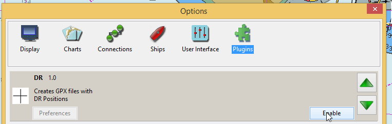
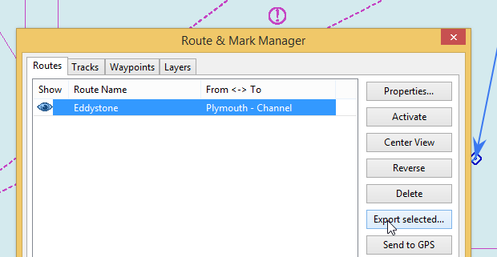
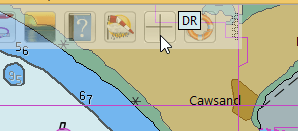
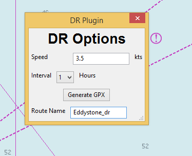
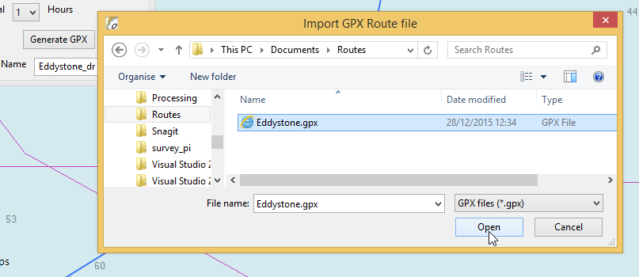
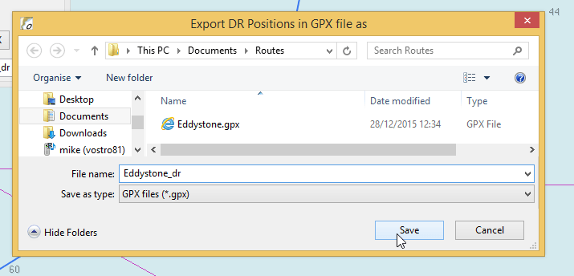
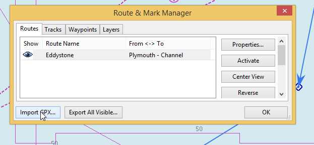
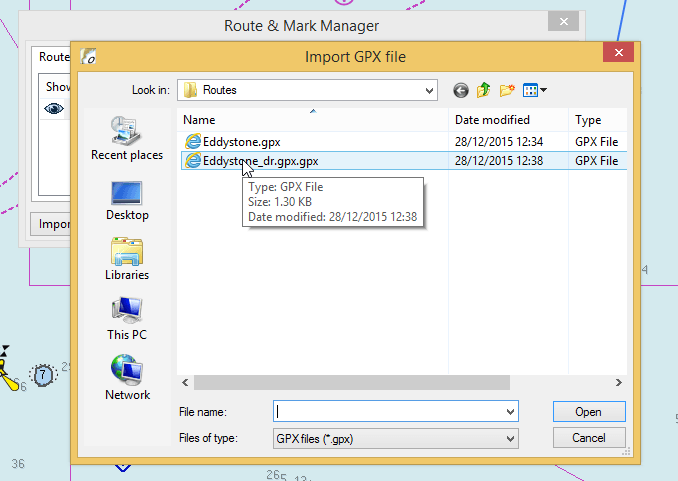
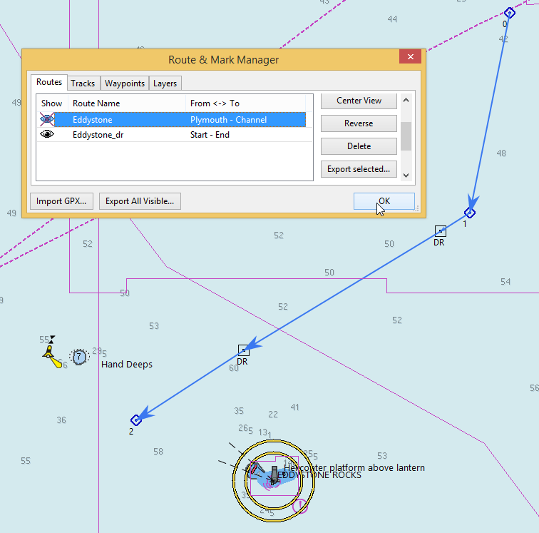

Add DR positions to a route by means of editing a gpx file, which has been exported from 'Route Manager'.
In navigation, dead reckoning or dead-reckoning (also ded for deduced reckoning or DR) is the process of calculating one's current position by using a previously determined position, or fix, and advancing that position based upon known or estimated speeds over elapsed time and course.
The DR plugin is a means of adding DR positions to a route. Because the plugin cannot access 'Route Manager' directly it works by editing a gpx file, which has been exported from 'Route Manager'.
DR speed and the time between the DR positions can be changed before the DR gpx is finally created.
This plugin is a temporary solution to the problem of creating DR positions. The Draw plugin now allows the creation of DR positions for course legs.
Copy 'DR_pi.dll' to the plugins folder. Start OpenCPN. Tools/Options and select 'Enable' for the DR entry.

Save the route which you want to add DR positions to by using 'Route Manager'. Make a note of the folder where this original route file can be found.

Start DR:

The main page of the plugin appears:

The DR speed and interval between DR positions have been added. The DR route name is entered in the bottom box.
The process of creating the DR route is started by pressing 'Generate GPX'. A file dialog box appears.

Select the route GPX file where DR positions will be added.
Immediately after selecting this file a new file dialog box appears.

After pressing 'Save' the route_dr gpx file is created in the folder you have chosen. If the original file is not needed you can use the same file name and the original file will be over-written.
The plugin can now be closed.
Using 'Route Manager' import the DR gpx:



The DR route is now available. To avoid confusion the original route can be hidden by using the 'Eye' symbol.